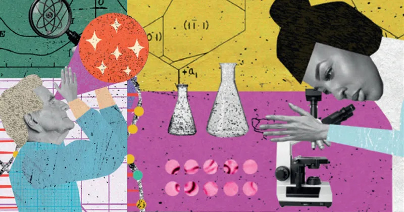

“Ainda é possível transformar o Brasil em protagonista global na área de ciência, tecnologia e inovação”, afirma o físico Luiz Davidovich, professor emérito da Universidade Federal do Rio de Janeiro (UFRJ) e, até recentemente, presidente da Academia Brasileira de Ciências (ABC), no artigo de abertura do décimo e último fascículo do livro Fapesp 60 anos: Ciência, Cultura e Desenvolvimento. A publicação busca trazer temas importantes da ciência e a atuação da Fundação de Amparo à Pesquisa do Estado de São Paulo (Fapesp) no financiamento e incentivo à pesquisa. Na publicação, Davidovich alerta que o protagonismo dependerá de “políticas públicas arrojadas, lastreadas na abrangente estrutura institucional da ciência nacional e no cabedal de conhecimento nas instituições de ciência e tecnologia, consolidado ao longo de décadas”. Trata-se de um enorme desafio para um país com escolaridade precária, com apenas 16% dos egressos do ensino superior graduados em áreas de ciência, tecnologia, engenharia e matemática e cerca de 900 pesquisadores por milhão de habitantes – os países da Organização para Cooperação e Desenvolvimento Econômico (OCDE) têm, em média, 4 mil por milhão – e com uma agenda econômica que “menospreza” o papel da ciência e da inovação no desenvolvimento nacional, sublinha Davidovich. “Não basta correr, é preciso correr mais que os outros”, adverte. Com o título De olho no futuro, o último fascículo do livro examina as oportunidades oferecidas pela ciência e os grandes desafios para fazer o Brasil avançar em áreas estratégicas do desenvolvimento sustentável. O capítulo Transição verde e transição digital aponta dois dos vetores de pesquisa que já integram a agenda da Fapesp para o futuro: as mudanças climáticas e as tecnologias digitais – notadamente a inteligência artificial. “Este momento é orientado por alguns grandes eixos da economia mundial, entre eles o da transição verde”, afirma Marco Antonio Zago, presidente da Fapesp. “Pesquisas sobre a região amazônica estão na ordem do dia”, completa Paulo Artaxo, um dos coordenadores do Programa Fapesp de Pesquisa sobre Mudanças Climáticas Globais (PFPMCG). Para responder a esses grandes desafios a Fundação financia grandes programas de pesquisa, como o PFPMCG, o Bioen (sobre bioenergia), o BIOTA (sobre biodiversidade), o eScience (sobre computação) ou ainda os Centros de Pesquisa, Inovação e Difusão (Cepids), que envolvem centenas de pesquisadores de diferentes áreas do conhecimento, trabalhando em colaboração. O Bioen, por exemplo, já investiga o uso da técnica de edição gênica Crispr/Cas9 para alterar características genéticas da cana-de-açúcar e aumentar a produtividade da produção de biocombustíveis. Também o uso da inteligência artificial promete ter um enorme impacto na produção agrícola, na geração de energia e nos transportes, prevê Roberto Marcondes Cesar Júnior, coordenador do programa Cepids. Em 2020, a Fapesp inaugurou um Centro de Pesquisa em Engenharia (CPE) voltado à pesquisa em inteligência artificial em parceria com a IBM e sede na USP. A expectativa é que os avanços nas áreas de inteligência artificial impactem ainda outras áreas de pesquisa, como a genômica, por exemplo, permitindo a compreensão muito mais ampla de como os genes humanos interagem entre si, com o organismo e com o ambiente, na avaliação de Jorge Kalil, diretor do Laboratório de Imunologia do Instituto do Coração (Incor). As tecnologias digitais irão requerer análises críticas de seus efeitos sobre a cultura e a sociedade, exigindo a articulação de pesquisadores de diferentes áreas. “Está cada vez mais nítido que o diálogo interdisciplinar é fundamental para lidarmos com problemas contemporâneos”, sublinha Márcio Barreto, da Faculdade de Ciências Aplicadas da Universidade Estadual de Campinas (Unicamp).